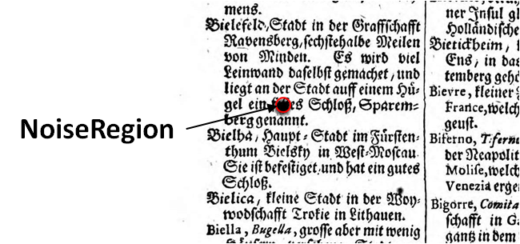

Schäden, Schmutz, Verfärbungen, Rauschen (NoiseRegion)
Schäden, Schmutz, Verfärbungen, Artefakte die durch verschiedene Faktoren (Beleuchtung, Spiegelungen, Scannen) hervorgerufen werden, sind mit der NoiseRegion zu kennzeichnen. Mit der Kennzeichnung dieser Regionen werden diese beim Trainingsprozess nicht für die Texterkennung genutzt.
